Paper identity & coverageمشخصات و پوشش مقاله
Jiajing Huang, Naghmeh Ghalamsiah, Abhidnya Patharkar, Ojas Pradhan, Mengyuan Chu, Teresa Wu, Jin Wen, Zheng O’Neill, Kasim Selcuk Candan. Energy & Buildings 317 (2024), 114378. Available online 3 June 2024. DOI: 10.1016/j.enbuild.2024.114378.جیاجینگ هوانگ و همکاران؛ Energy & Buildings، جلد ۳۱۷، سال ۲۰۲۴، شماره 114378. انتشار آنلاین ۳ ژوئن ۲۰۲۴. Source · PDF p. 1
Coverage includes the main text and appendices A–C: 13 main figures plus appendix figures C14–C16, 5 main tables and 6 appendix tables, Algorithm 1, and 53 bibliography entries. Original pages retain the equations, node lists, ranking scores, and source plots; only printed quantitative results are transcribed.پوشش شامل متن اصلی و پیوستهای A تا C، سیزده شکل اصلی و سه شکل پیوست، پنج جدول اصلی و شش جدول پیوست، الگوریتم ۱ و ۵۳ مدخل کتابنامه است. صفحات اصلی معادلات، گرهها، امتیازها و نمودارها را حفظ میکنند؛ فقط مقادیر صریح چاپشده ثبت شدهاند. Source · PDF p. 13
Research problem & stated hypothesisمسئله پژوهش و فرضیه بیانشده
The paper addresses cross-level HVAC faults whose symptoms propagate through coupled subsystems. It argues that expert-driven BN structure construction is labor-intensive and may overlook interactions among symptoms.مسئله مقاله خطاهای بینسطحی HVAC است که نشانههای آنها در زیرسامانههای بههمپیوسته انتشار مییابند. ساخت ساختار شبکه بیزی با دانش خبره زمانبر است و ممکن است تعامل نشانهها را نبیند. Source · PDF p. 2
The authors explicitly hypothesize that faults in an interconnected building produce unique co-evolving patterns among multiple symptoms. They call these patterns synchronicity, measure them with Eigen-Entropy, and use probability of necessity to select fault–evidence connections. No numbered research-question or H1/H2 list is presented.فرضیه صریح نویسندگان این است که خطا در ساختمان بههمپیوسته، الگوهای ویژه همتکاملی چند نشانه ایجاد میکند. این الگوها همزمانی نام دارند؛ با Eigen-Entropy سنجیده میشوند و احتمال ضرورت برای انتخاب اتصال خطا و شاهد به کار میرود. فهرست شمارهگذاریشده پرسش یا فرضیه ارائه نشده است. Source · PDF p. 2
Method: ranked evidence → synchronicity → BNروش: رتبهبندی شاهد، همزمانی، شبکه بیزی
A BN represents fault nodes and evidence nodes. At diagnosis time, posterior probabilities are computed and the largest fault posterior determines the predicted label. Sections 2–3 introduce Pearl probability of necessity (PN), Eigen-Entropy (EE), cosine-based movement similarity, and the EECL construction procedure.شبکه بیزی گرههای خطا و شاهد را نمایش میدهد. در تشخیص، بیشترین احتمال پسین خطا برچسب پیشبینی را تعیین میکند. بخشهای ۲ و ۳ احتمال ضرورت PN، آنتروپی ویژه EE، شباهت کسینوسی حرکت و فرایند EECL را معرفی میکنند. Source · PDF p. 3
Initialization uses random-forest feature importance for all-fault classification, pairwise fault classification, and each fault versus its fault-free baseline. Features with importance greater than 0.05 are considered critical. Their union is ranked by each feature’s maximum score across those tasks (Appendix B).آغاز کار با اهمیت ویژگی جنگل تصادفی برای تمایز همه خطاها، زوجهای خطا و هر خطا از مبنای سالم است. ویژگی با اهمیت بیشتر از ۰٫۰۵ بحرانی در نظر گرفته میشود. اجتماع آنها با بیشینه امتیاز هر ویژگی در این وظایف رتبهبندی میشود. Source · PDF p. 13
For each fault and day, normalize evidence against its baseline; calculate EE over the first q samples, q=2,…,t; compute NEEq=EEq/q. Assign synchronicity when NEEq < ε, repeat on the baseline, and tabulate binary fault/synchronicity frequencies. If PN<0.5, remove the lowest-ranked feature and repeat; otherwise retain the selected set and connect it to its fault node. Algorithm 1 contains 18 steps.برای هر خطا و روز، شاهد نسبت به مبنای سالم نرمال میشود؛ EE روی q نمونه نخست محاسبه و NEEq=EEq/q ساخته میشود. اگر NEEq از ε کمتر باشد همزمانی ثبت میشود. با تکرار روی مبنا، فراوانی دودویی خطا/همزمانی به دست میآید. اگر PN کمتر از ۰٫۵ باشد کمرتبهترین ویژگی حذف و محاسبه تکرار میشود؛ در غیر این صورت مجموعه به گره خطا متصل میشود. Source · PDF p. 6
EECL learns the structure; posterior calculations use prior and conditional probabilities predefined as in Pradhan [51]. Figure 11 states that BayesFusion software [52,53] generated the posterior results. This parameterization dependency is acknowledged in the discussion.EECL ساختار را یاد میگیرد؛ محاسبه پسین از احتمالهای پیشین و شرطی ازپیشتعریفشده بر اساس Pradhan [51] استفاده میکند. شکل ۱۱ نرمافزار BayesFusion [52,53] را برای تولید پسین ذکر میکند. وابستگی پارامترها در بحث مقاله پذیرفته شده است. Source · PDF p. 10
Testbed, faults & data splitبستر آزمون، خطاها و تقسیم داده
A Modelica/Dymola virtual testbed represents one floor of a five-zone medium office: one AHU, five VAV terminals, a chiller plant and boiler. It is based on Modelica Buildings Library [41] and compared against a DOE/EnergyPlus prototype [42,43]. The system is sized for Chicago climate zone 5A.بستر مجازی Modelica/Dymola یک طبقه اداری پنجناحیهای با یک AHU، پنج ترمینال VAV، چیلر و بویلر را مدل میکند. پایه آن کتابخانه Modelica Buildings [41] است و با نمونه DOE/EnergyPlus [42,43] مقایسه شده است. سایزبندی برای اقلیم 5A شیکاگو انجام شده است. Source · PDF p. 7
Three separate fault conditions: cooling-coil valve stuck fully open; outdoor-air damper stuck fully closed; supply-duct leakage at 20% degradation. The three fault datasets share a fault-free baseline. These are three fault test cases, not an experiment establishing simultaneous-fault diagnosis.سه وضعیت مجزای خطا: گیرکردن شیر کویل سرمایش کاملاً باز، دمپر هوای بیرون کاملاً بسته و نشت کانال رفت با افت ۲۰٪. هر سه داده خطا مبنای سالم مشترک دارند. اینها سه مورد آزمون خطا هستند و آزمایش اثبات تشخیص همزمان چند خطا محسوب نمیشوند. Source · PDF p. 7
July 9–August 5, 28 days, five-minute sampling, 120 occupied samples per day; 3360 samples per scenario before excluding unoccupied days. Training: 15 days / 1800 samples. Testing: 5 days / 600 samples (printed as “6,00”); 8 days excluded. Appendix A specifies training days 1–3, 6–10, 13–17, 20–21 and test days 22–24, 27–28.دوره ۹ ژوئیه تا ۵ اوت، ۲۸ روز، نمونهبرداری پنجدقیقهای و ۱۲۰ نمونه در ساعات اشغال هر روز است. پیش از حذف روزهای بدون حضور ۳۳۶۰ نمونه در هر سناریو وجود دارد. آموزش ۱۵ روز/۱۸۰۰ نمونه و آزمون ۵ روز/۶۰۰ نمونه است؛ ۸ روز حذف شدهاند. روزهای دقیق در پیوست A آمدهاند. Source · PDF p. 13
Of 132 evidence variables, 50 AHU/chiller-related candidates are used. Table 4 lists their identifiers and meanings. The published method therefore assumes access to a much richer commercial HVAC sensor set than the selected residential benchmark.از ۱۳۲ متغیر شاهد، ۵۰ نامزد مرتبط با AHU/چیلر انتخاب شدهاند. جدول ۴ شناسه و معنی آنها را دارد. در نتیجه روش منتشرشده مجموعه حسگر تجاری غنیتری از معیار مسکونی منتخب فرض میکند؛ این تفاوت باید در اقتباس بررسی شود. Source · PDF p. 8
Metrics, baselines & sensitivity experimentمعیارها، خطمبناها و آزمون حساسیت
Isolation accuracy IA is the fraction of samples whose maximum-posterior label equals the true fault. AIA averages IA across fault classes. SIA=AIA/m divides AIA by the number m of evidence nodes; it rewards compactness. SIA is not a separate calibrated probability of correct diagnosis.IA سهم نمونههایی است که برچسب بیشترین پسین با خطای واقعی برابر است. AIA میانگین IA میان کلاسهای خطا و SIA=AIA/m آن را بر تعداد شاهدها تقسیم میکند. SIA فشردگی را پاداش میدهد و احتمال کالیبره مستقل صحت تشخیص نیست. Source · PDF p. 8
Comparators: expert-knowledge BN [13] and Mutual Information–Kruskal–K2 (MIKK2) structure learning [50]. The latter computes mutual information, constructs a maximum spanning tree using Kruskal, derives node order through depth-first search, and applies K2. All are compared using the stated probability parameter model.مقایسهها شامل شبکه خبره [13] و یادگیری ساختار MIKK2 [50] هستند. MIKK2 اطلاعات متقابل، درخت پوشای بیشینه Kruskal، ترتیب گره با جستوجوی عمقی و K2 را به کار میبرد. شبکهها با مدل پارامتر احتمالات بیانشده مقایسه میشوند. Source · PDF p. 10
Sensitivity analysis varies ε from .001 to .005 in .001 increments. At .001–.004 the network has 19 evidence nodes, AIA 78%, SIA 4.11%; at .005 it has 8 nodes, AIA 91%, SIA 11.38%. The authors select .005 based on these results.در آزمون حساسیت ε از ۰٫۰۰۱ تا ۰٫۰۰۵ با گام ۰٫۰۰۱ تغییر میکند. برای ۰٫۰۰۱ تا ۰٫۰۰۴، ۱۹ شاهد، AIA برابر ۷۸٪ و SIA برابر ۴٫۱۱٪ است. در ۰٫۰۰۵، ۸ شاهد، AIA برابر ۹۱٪ و SIA برابر ۱۱٫۳۸٪ گزارش و همین مقدار انتخاب میشود. Source · PDF p. 8
Results & tradeoffsنتایج و مصالحهها
| Measureمعیار | EECL | Expert | MIKK2 |
|---|---|---|---|
| Cooling valve openشیر سرمایش باز | 98% | 100% | 52% |
| Outdoor damper closedدمپر بیرونی بسته | 84% | 100% | 81% |
| Duct leakage 20%نشت کانال ۲۰٪ | 90% | 100% | 100% |
| Average isolation accuracyمیانگین دقت جداسازی | 91% | 100% | 78% |
| Unique evidence nodesشاهدهای یکتا | 8 | 12 | 19 |
| SIASIA | 11.38% | 8.33% | 4.11% |
The paper reports fewer evidence nodes and higher SIA for EECL, while the expert BN retains higher AIA. Per-fault memberships overlap: EECL uses 8/3/4 links for the three faults, but only 8 distinct evidence variables overall. These per-fault counts should not be summed to obtain the network’s unique-node count.مقاله برای EECL شاهد کمتر و SIA بیشتر گزارش میکند، اما AIA شبکه خبره بیشتر است. مجموعه شاهد خطاها همپوشانی دارد: تعداد اتصالهای هر خطا ۸/۳/۴ است، ولی کل متغیرهای شاهد یکتا ۸ عددند. جمع تعدادهای هر خطا برابر تعداد یکتای شبکه نیست. Source · PDF p. 10
All 16 figures: original images & evidenceهر ۱۶ شکل: تصاویر اصلی و شواهد
Fig. 1 / شکل 1
Probabilistic evidenceشواهد احتمالاتی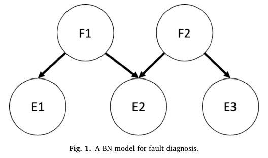
How to read this figureراهنمای خواندن شکل
Compare the hypotheses using the legend and the displayed cases. A posterior is the model’s belief; assess it alongside the reported diagnostic outcomes, rather than treating confidence alone as correctness.فرضیهها را با راهنمای رنگ و حالتهای نمایشدادهشده مقایسه کنید. پسین باور مدل است؛ آن را همراه نتیجه تشخیص بسنجید و اطمینان را بهتنهایی معادل صحت نگیرید.
Reader guidance · not an additional author claimراهنمای مطالعه · ادعای اضافی نویسنده نیستWhat this figure showsاین شکل چه نشان میدهد؟
Two fault nodes F1/F2 connect to three evidence nodes E1/E2/E3; shared evidence supports posterior comparison. This is an illustrative topology, not an experiment.دو گره خطا به سه شاهد متصلاند؛ شاهد مشترک در مقایسه پسین نقش دارد. این توپولوژی نمونه است و آزمایش عددی نیست. Source · PDF p. 3
Fig. 2 / شکل 2
Time & behaviorزمان و رفتار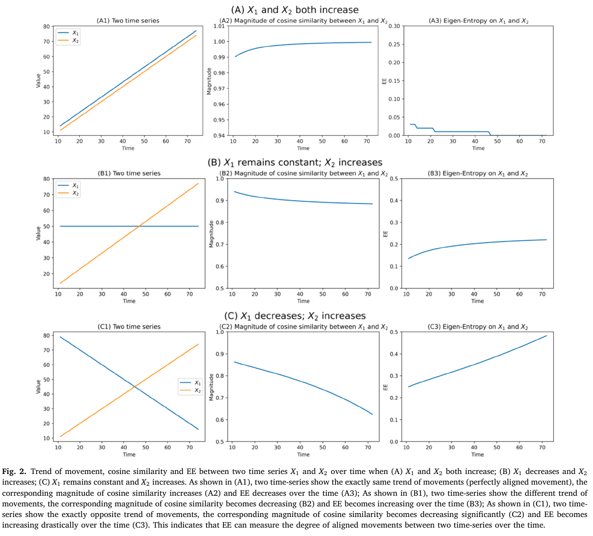
How to read this figureراهنمای خواندن شکل
Read the time window and units before comparing traces. Match each curve to its legend and the same operating conditions; unlabeled samples are not numerical measurements extracted by this report.پیش از مقایسه مسیرها، بازه زمان و واحدها را بخوانید. هر منحنی را به راهنما و شرایط یکسان وصل کنید؛ نمونه بدون برچسب، اندازهگیری عددی استخراجشده در این گزارش نیست.
Reader guidance · not an additional author claimراهنمای مطالعه · ادعای اضافی نویسنده نیستWhat this figure showsاین شکل چه نشان میدهد؟
Panels A/B/C contrast both series increasing, one constant/one increasing, and one decreasing/one increasing. The authors use these examples to explain synchronicity. No curve samples are numerically printed; no values are estimated.سه پنل رشد هر دو سری، ثابتبودن یکی و رشد دیگری و حرکت مخالف را نشان میدهند. هدف توضیح همزمانی است. نمونههای منحنی عدد چاپشده ندارند و تخمین زده نشدهاند. Source · PDF p. 4
Fig. 3 / شکل 3
Comparison & resultsمقایسه و نتایج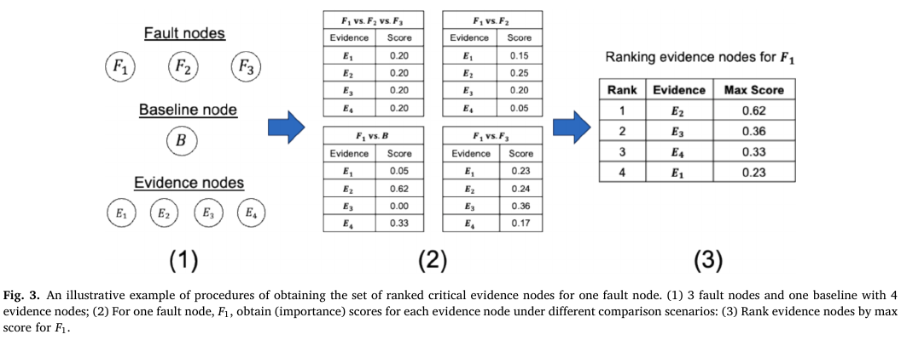
How to read this figureراهنمای خواندن شکل
Check the axes, units, panel labels and the caption’s definition of better performance. Compare methods under the stated conditions; keep uncertainty, tradeoffs and normalization separate from headline gains.محور، واحد، پنل و تعریف عملکرد بهتر در عنوان را بررسی کنید. روشها را در شرایط بیانشده مقایسه و عدمقطعیت، مصالحه و نرمالسازی را از بهبود شاخص اصلی جدا نگه دارید.
Reader guidance · not an additional author claimراهنمای مطالعه · ادعای اضافی نویسنده نیستWhat this figure showsاین شکل چه نشان میدهد؟
Illustrative max-importance ranking: E2 .62, E3 .36, E4 .33, E1 .23. Scores combine all-fault, pairwise and fault-versus-baseline tasks. These are the teaching example, not Table B1’s case-study scores.رتبهبندی مثال: E2 با ۰٫۶۲، E3 با ۰٫۳۶، E4 با ۰٫۳۳ و E1 با ۰٫۲۳. اینها مثال آموزشیاند و با امتیاز داده واقعی جدول B1 یکی نیستند. Source · PDF p. 5
Fig. 4 / شکل 4
Mechanism & workflowسازوکار و گردش کار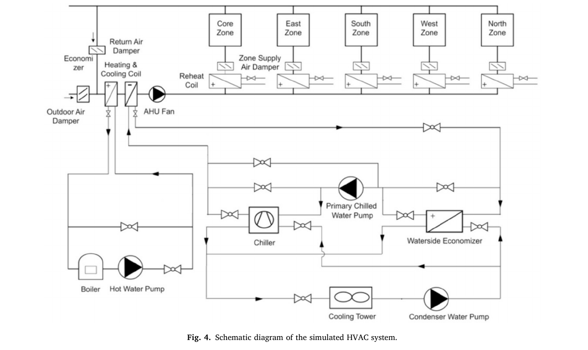
How to read this figureراهنمای خواندن شکل
Trace the inputs, processing stages and outputs, then look for feedback or validation paths. Use the accompanying explanation to distinguish the proposed design from components actually tested in the paper.ورودی، مرحله پردازش و خروجی را دنبال و مسیر بازخورد یا اعتبارسنجی را پیدا کنید. با توضیح همراه، طراحی پیشنهادی را از مؤلفه واقعاً آزمودهشده جدا کنید.
Reader guidance · not an additional author claimراهنمای مطالعه · ادعای اضافی نویسنده نیستWhat this figure showsاین شکل چه نشان میدهد؟
Shows the air/water-side chain linking AHU, zones, chiller, economizer, cooling tower and boiler. It establishes where faults can propagate; it is not the Alameda residential schematic.زنجیره هوا و آب، AHU، ناحیهها، چیلر، اکونومایزر، برج خنککن و بویلر نمایش داده شده و مسیر انتشار خطا را مشخص میکند. این نقشه ساختمان مسکونی Alameda نیست. Source · PDF p. 6
Fig. 5 / شکل 5
Comparison & resultsمقایسه و نتایج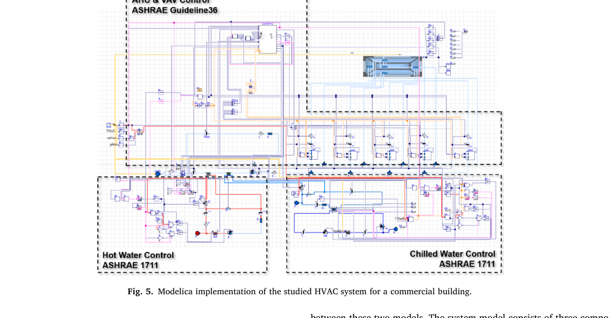
How to read this figureراهنمای خواندن شکل
Check the axes, units, panel labels and the caption’s definition of better performance. Compare methods under the stated conditions; keep uncertainty, tradeoffs and normalization separate from headline gains.محور، واحد، پنل و تعریف عملکرد بهتر در عنوان را بررسی کنید. روشها را در شرایط بیانشده مقایسه و عدمقطعیت، مصالحه و نرمالسازی را از بهبود شاخص اصلی جدا نگه دارید.
Reader guidance · not an additional author claimراهنمای مطالعه · ادعای اضافی نویسنده نیستWhat this figure showsاین شکل چه نشان میدهد؟
Identifies AHU controls, VAV terminals, hot-water and chilled-water control loops in the virtual testbed. Sizing comparisons are in Table 2, not numerical output from this diagram.کنترل AHU، پایانههای VAV و حلقههای آب سرد و گرم نشان داده شدهاند. مقایسه سایزبندی در جدول ۲ است و خروجی عددی این شکل نیست. Source · PDF p. 7
Fig. 6 / شکل 6
Source visualتصویر منبع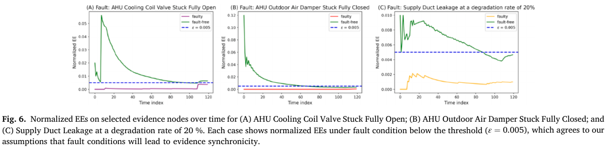
How to read this figureراهنمای خواندن شکل
Read the original labels and caption first, then use the explanation and evidence note below. Printed quantities are preserved separately from reviewer interpretation.ابتدا برچسبها و عنوان اصلی را بخوانید و سپس توضیح و یادداشت شاهد را بررسی کنید. مقدار چاپشده از تفسیر مرورگر جدا نگه داشته شده است.
Reader guidance · not an additional author claimراهنمای مطالعه · ادعای اضافی نویسنده نیستWhat this figure showsاین شکل چه نشان میدهد؟
Threshold ε=.005 is printed. Fault-condition traces lie below the threshold in the displayed examples. Baseline and fault curves have no printed sample-value labels; no points are digitized.آستانه ۰٫۰۰۵ چاپ شده است. در نمونههای نمایشی منحنی خطا زیر آن قرار میگیرد. نقاط منحنی برچسب عددی ندارند و داده تخمینی استخراج نشده است. Source · PDF p. 9
Fig. 7 / شکل 7
Source visualتصویر منبع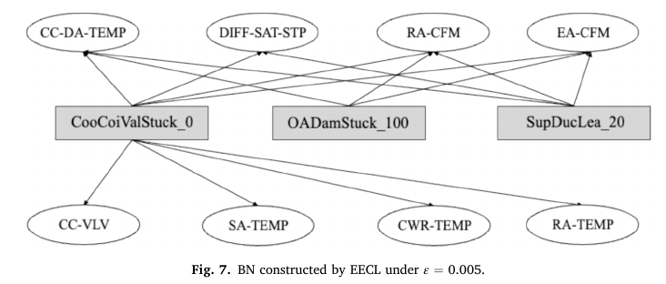
How to read this figureراهنمای خواندن شکل
Read the original labels and caption first, then use the explanation and evidence note below. Printed quantities are preserved separately from reviewer interpretation.ابتدا برچسبها و عنوان اصلی را بخوانید و سپس توضیح و یادداشت شاهد را بررسی کنید. مقدار چاپشده از تفسیر مرورگر جدا نگه داشته شده است.
Reader guidance · not an additional author claimراهنمای مطالعه · ادعای اضافی نویسنده نیستWhat this figure showsاین شکل چه نشان میدهد؟
The eight distinct evidence variables are CC-DA-TEMP, DIFF-SAT-STP, RA-CFM, EA-CFM, CC-VLV, SA-TEMP, CWR-TEMP, RA-TEMP. Edges share some variables among fault nodes.هشت شاهد یکتا CC-DA-TEMP، DIFF-SAT-STP، RA-CFM، EA-CFM، CC-VLV، SA-TEMP، CWR-TEMP و RA-TEMP هستند. بعضی شاهدها میان خطاها مشترکاند. Source · PDF p. 9
Fig. 8 / شکل 8
Source visualتصویر منبع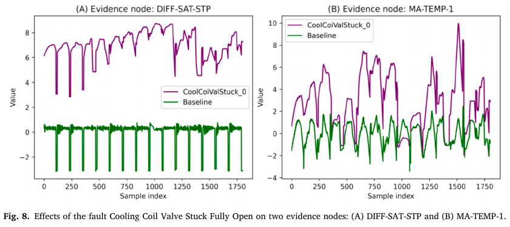
How to read this figureراهنمای خواندن شکل
Read the original labels and caption first, then use the explanation and evidence note below. Printed quantities are preserved separately from reviewer interpretation.ابتدا برچسبها و عنوان اصلی را بخوانید و سپس توضیح و یادداشت شاهد را بررسی کنید. مقدار چاپشده از تفسیر مرورگر جدا نگه داشته شده است.
Reader guidance · not an additional author claimراهنمای مطالعه · ادعای اضافی نویسنده نیستWhat this figure showsاین شکل چه نشان میدهد؟
Fault/baseline separation differs between the two variables. The authors use this to explain physical expert selection of DIFF-SAT-STP. No exact plotted sample values are printed.جدایی داده سالم و خطا در دو شاهد متفاوت است. نویسندگان این تفاوت را برای توضیح انتخاب خبره به کار میبرند. مقدار دقیق نمونهها چاپ نشده است. Source · PDF p. 9
Fig. 9 / شکل 9
Source visualتصویر منبع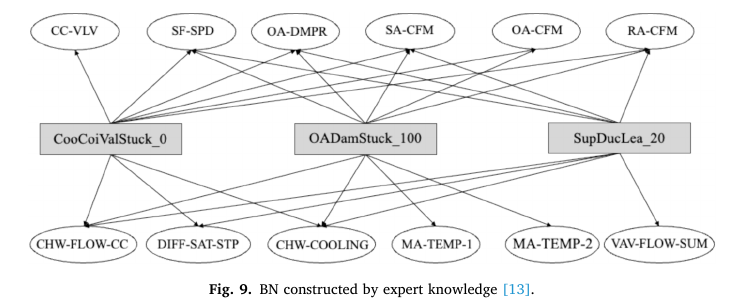
How to read this figureراهنمای خواندن شکل
Read the original labels and caption first, then use the explanation and evidence note below. Printed quantities are preserved separately from reviewer interpretation.ابتدا برچسبها و عنوان اصلی را بخوانید و سپس توضیح و یادداشت شاهد را بررسی کنید. مقدار چاپشده از تفسیر مرورگر جدا نگه داشته شده است.
Reader guidance · not an additional author claimراهنمای مطالعه · ادعای اضافی نویسنده نیستWhat this figure showsاین شکل چه نشان میدهد؟
Twelve distinct evidence nodes; per-fault evidence counts are 9/9/8 as stated in §4.3.2. Original topology is retained for inspection.۱۲ شاهد یکتا و تعداد شاهد هر خطا طبق متن ۹/۹/۸ است. توپولوژی اصلی برای بررسی حفظ شده است. Source · PDF p. 9
Fig. 10 / شکل 10
Comparison & resultsمقایسه و نتایج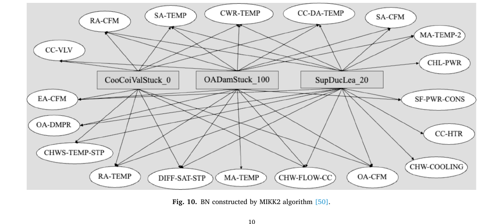
How to read this figureراهنمای خواندن شکل
Check the axes, units, panel labels and the caption’s definition of better performance. Compare methods under the stated conditions; keep uncertainty, tradeoffs and normalization separate from headline gains.محور، واحد، پنل و تعریف عملکرد بهتر در عنوان را بررسی کنید. روشها را در شرایط بیانشده مقایسه و عدمقطعیت، مصالحه و نرمالسازی را از بهبود شاخص اصلی جدا نگه دارید.
Reader guidance · not an additional author claimراهنمای مطالعه · ادعای اضافی نویسنده نیستWhat this figure showsاین شکل چه نشان میدهد؟
Nineteen distinct evidence nodes; §4.3.4 reports 11/15/17 per-fault memberships. Source topology enables comparison with EECL and Expert.۱۹ شاهد یکتا؛ متن تعداد شاهد هر خطا را ۱۱/۱۵/۱۷ گزارش میکند. توپولوژی برای مقایسه با EECL و خبره حفظ شده است. Source · PDF p. 10
Fig. 11 / شکل 11
Probabilistic evidenceشواهد احتمالاتی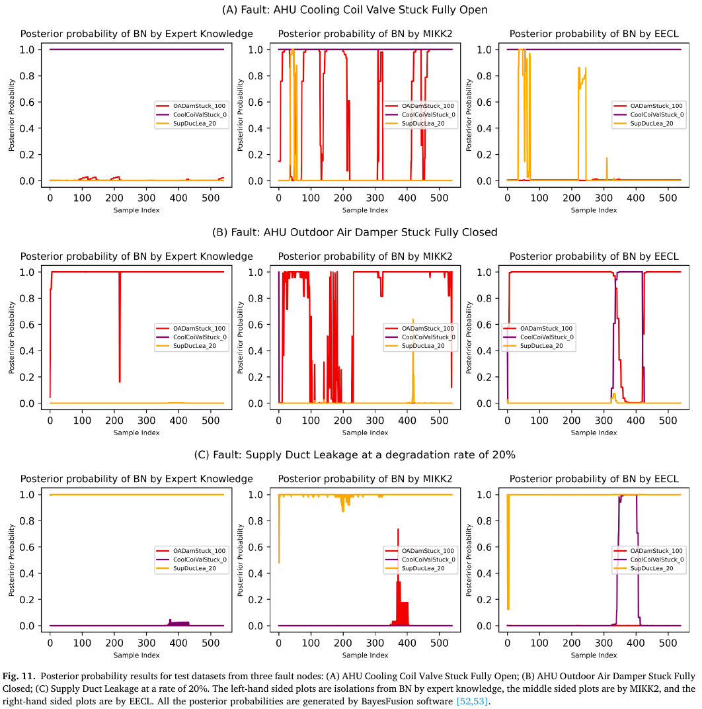
How to read this figureراهنمای خواندن شکل
Compare the hypotheses using the legend and the displayed cases. A posterior is the model’s belief; assess it alongside the reported diagnostic outcomes, rather than treating confidence alone as correctness.فرضیهها را با راهنمای رنگ و حالتهای نمایشدادهشده مقایسه کنید. پسین باور مدل است؛ آن را همراه نتیجه تشخیص بسنجید و اطمینان را بهتنهایی معادل صحت نگیرید.
Reader guidance · not an additional author claimراهنمای مطالعه · ادعای اضافی نویسنده نیستWhat this figure showsاین شکل چه نشان میدهد؟
Rows are the three faults; columns Expert/MIKK2/EECL. Probabilities were generated in BayesFusion [52,53]. Exact curve samples are not labeled; the isolation rates are transcribed from §4.3.4 instead.سطرها سه خطا و ستونها خبره، MIKK2 و EECL هستند. پسین با BayesFusion [52,53] ساخته شده است. نقاط دقیق چاپ نشدهاند؛ نرخ جداسازی از متن بخش ۴٫۳٫۴ ثبت شده است. Source · PDF p. 11
Fig. 12 / شکل 12
Comparison & resultsمقایسه و نتایج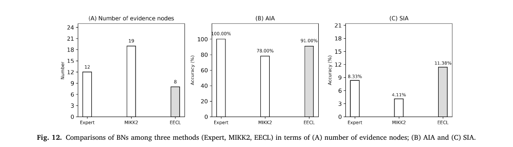
How to read this figureراهنمای خواندن شکل
Check the axes, units, panel labels and the caption’s definition of better performance. Compare methods under the stated conditions; keep uncertainty, tradeoffs and normalization separate from headline gains.محور، واحد، پنل و تعریف عملکرد بهتر در عنوان را بررسی کنید. روشها را در شرایط بیانشده مقایسه و عدمقطعیت، مصالحه و نرمالسازی را از بهبود شاخص اصلی جدا نگه دارید.
Reader guidance · not an additional author claimراهنمای مطالعه · ادعای اضافی نویسنده نیستWhat this figure showsاین شکل چه نشان میدهد؟
Printed labels, Expert/MIKK2/EECL: evidence 12/19/8; AIA 100/78/91%; SIA 8.33/4.11/11.38%. This exposes the compactness/accuracy tradeoff directly.اعداد چاپشده به ترتیب خبره/MIKK2/EECL: شاهد ۱۲/۱۹/۸؛ AIA برابر ۱۰۰/۷۸/۹۱٪؛ SIA برابر ۸٫۳۳/۴٫۱۱/۱۱٫۳۸٪. مصالحه فشردگی و دقت مستقیماً دیده میشود. Source · PDF p. 11
Fig. 13 / شکل 13
Source visualتصویر منبع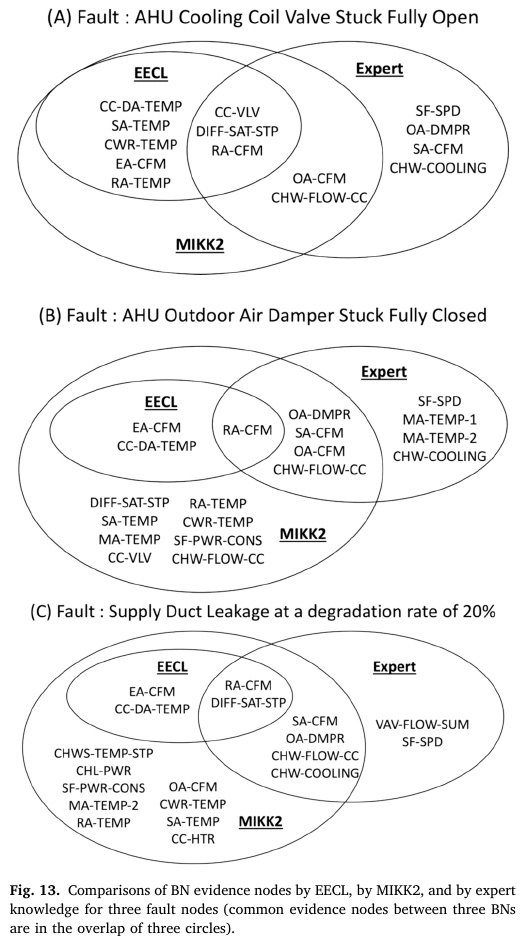
How to read this figureراهنمای خواندن شکل
Read the original labels and caption first, then use the explanation and evidence note below. Printed quantities are preserved separately from reviewer interpretation.ابتدا برچسبها و عنوان اصلی را بخوانید و سپس توضیح و یادداشت شاهد را بررسی کنید. مقدار چاپشده از تفسیر مرورگر جدا نگه داشته شده است.
Reader guidance · not an additional author claimراهنمای مطالعه · ادعای اضافی نویسنده نیستWhat this figure showsاین شکل چه نشان میدهد؟
Three-way common evidence counts are 3, 1 and 2 for cooling-valve, damper and duct-leakage cases respectively (§4.3.4). Diagram labels identify which sensor variables are shared and method-specific.تعداد شاهد مشترک هر سه روش برای شیر، دمپر و نشت به ترتیب ۳، ۱ و ۲ است. نام گرهها نشان میدهد کدام متغیر مشترک یا اختصاصی است. Source · PDF p. 12
Fig. C14 / شکل 14
Comparison & resultsمقایسه و نتایج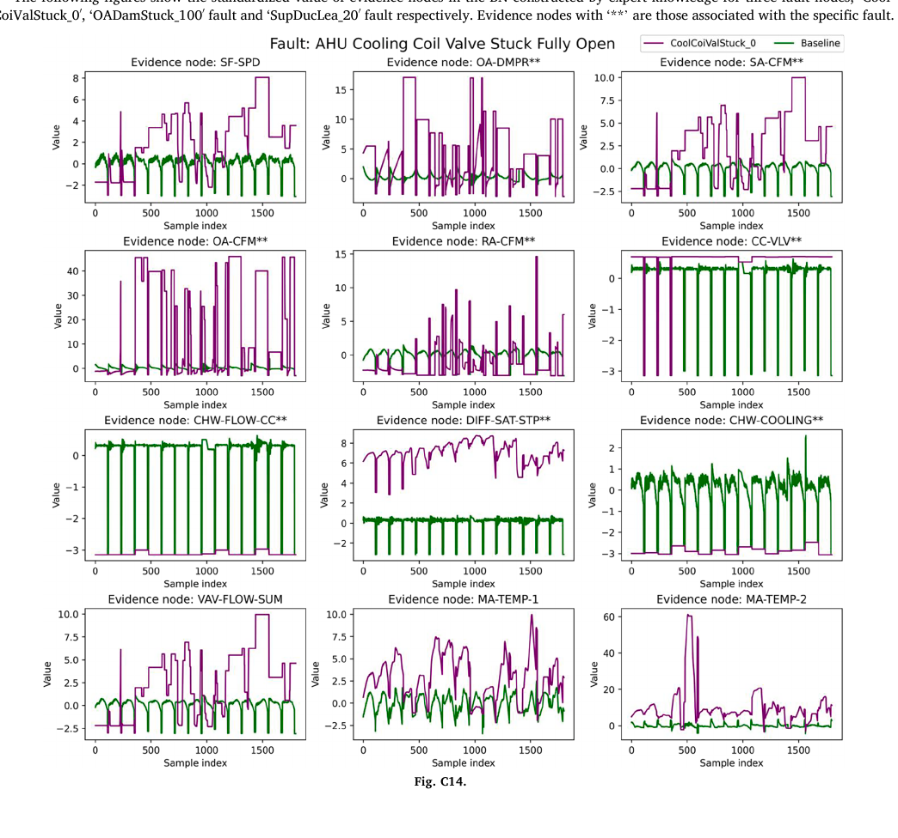
How to read this figureراهنمای خواندن شکل
Check the axes, units, panel labels and the caption’s definition of better performance. Compare methods under the stated conditions; keep uncertainty, tradeoffs and normalization separate from headline gains.محور، واحد، پنل و تعریف عملکرد بهتر در عنوان را بررسی کنید. روشها را در شرایط بیانشده مقایسه و عدمقطعیت، مصالحه و نرمالسازی را از بهبود شاخص اصلی جدا نگه دارید.
Reader guidance · not an additional author claimراهنمای مطالعه · ادعای اضافی نویسنده نیستWhat this figure showsاین شکل چه نشان میدهد؟
Fault and fault-free curves are compared for the candidate sensor variables; this supports Appendix C’s explanation of expert evidence selection. No numerical curve samples are estimated.منحنی خطا و سالم برای متغیرهای حسگر مقایسه شده و توضیح انتخاب خبره در پیوست C را پشتیبانی میکند. نمونه عددی تخمین زده نشده است. Source · PDF p. 15
Fig. C15 / شکل 15
Comparison & resultsمقایسه و نتایج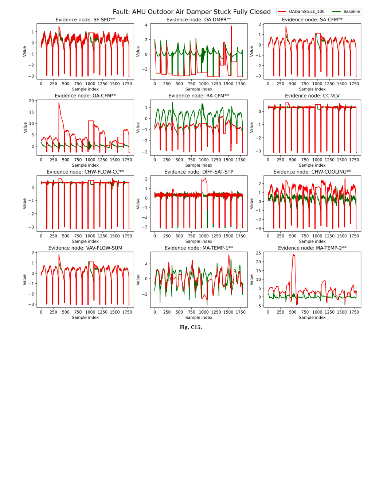
How to read this figureراهنمای خواندن شکل
Check the axes, units, panel labels and the caption’s definition of better performance. Compare methods under the stated conditions; keep uncertainty, tradeoffs and normalization separate from headline gains.محور، واحد، پنل و تعریف عملکرد بهتر در عنوان را بررسی کنید. روشها را در شرایط بیانشده مقایسه و عدمقطعیت، مصالحه و نرمالسازی را از بهبود شاخص اصلی جدا نگه دارید.
Reader guidance · not an additional author claimراهنمای مطالعه · ادعای اضافی نویسنده نیستWhat this figure showsاین شکل چه نشان میدهد؟
Multiple sensor traces compare damper-fault and baseline behavior. The figure supports physical evidence selection, not an independent test of generalization. No trace values are digitized.مسیرهای چند حسگر رفتار دمپر معیوب و مبنا را مقایسه میکنند. هدف پشتیبانی از انتخاب فیزیکی شاهد است و آزمون مستقل تعمیم نیست. مقادیر منحنی استخراج تخمینی نشدهاند. Source · PDF p. 16
Fig. C16 / شکل 16
Comparison & resultsمقایسه و نتایج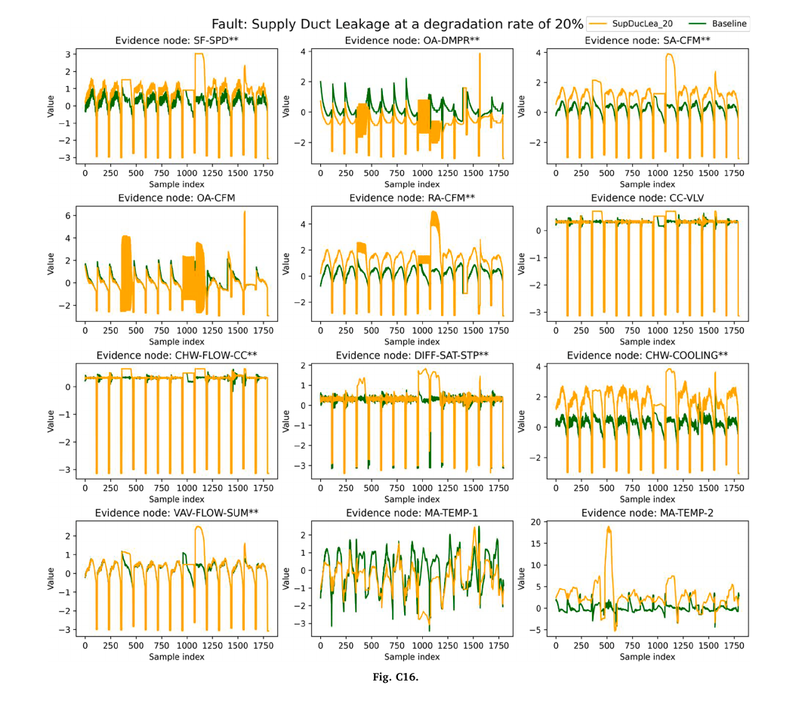
How to read this figureراهنمای خواندن شکل
Check the axes, units, panel labels and the caption’s definition of better performance. Compare methods under the stated conditions; keep uncertainty, tradeoffs and normalization separate from headline gains.محور، واحد، پنل و تعریف عملکرد بهتر در عنوان را بررسی کنید. روشها را در شرایط بیانشده مقایسه و عدمقطعیت، مصالحه و نرمالسازی را از بهبود شاخص اصلی جدا نگه دارید.
Reader guidance · not an additional author claimراهنمای مطالعه · ادعای اضافی نویسنده نیستWhat this figure showsاین شکل چه نشان میدهد؟
Fault at 20% duct-leakage degradation versus fault-free curves. The sensor comparisons are retained in the original graphic; exact per-sample values are not printed.خطای نشت با افت ۲۰٪ با حالت سالم مقایسه میشود. نمودار اصلی مقایسه حسگرها را حفظ میکند؛ مقادیر دقیق هر نمونه چاپ نشده است. Source · PDF p. 17
Tables & reproducibility evidenceجدولها و شواهد بازتولید
Table B5 · Final ranked evidence sets (continued p.15)رتبه نهایی شاهدها؛ ادامه صفحه ۱۵
Table B5 · PDF p. 14B5 continuation · PDF p. 15Exact RF hyperparameters, random seeds, software package versions and an executable repository link are not specified in the inspected method/appendix descriptions. Data availability is “on request.” Prior/conditional parameter modeling is referred to [51] and needs that source for faithful reproduction.ابرپارامتر دقیق جنگل تصادفی، بذر تصادفی، نسخه بستهها و لینک مخزن اجرایی در توضیحات روش/پیوست بررسیشده مشخص نشدهاند. داده با درخواست ارائه میشود. مدل پارامتر پیشین/شرطی به [51] ارجاع دارد و بازتولید وفادار به بررسی آن نیاز دارد. Source · PDF p. 13
Author-stated strengths, limitations & future workنقاط قوت، محدودیتها و آینده از دید نویسندگان
The claimed benefits are automated structure construction, consideration of symptom interactions through synchronicity, and fewer evidence variables with satisfactory isolation accuracy. The authors explicitly acknowledge dependence on data volume/quality/information, potential rejection of physically meaningful sensors with missing values, expert-based probability parameters, and limitations of binary synchronicity outcomes.مزایای ادعاشده ساخت خودکار ساختار، توجه به تعامل نشانهها و شاهد کمتر همراه دقت رضایتبخش است. نویسندگان وابستگی به حجم و کیفیت داده، حذف احتمالی حسگر معنادار با داده گمشده، پارامتر احتمالات خبره و محدودیت خروجی دودویی همزمانی را صریحاً میپذیرند. Source · PDF p. 12
Future work: more fault cases, multiple intensities within the same category, data-driven BN parameterization, and extension to other causal structure learning families, including functional causal models and score-based methods [25].کار آینده: خطاهای بیشتر، شدتهای مختلف یک دسته، پارامترسازی دادهمحور و گسترش به مدلهای علّی تابعی و روشهای مبتنی بر امتیاز [25]. Source · PDF p. 12
Critical analysis — reviewer observationsتحلیل انتقادی — ملاحظات مرورگر
The causal interpretation depends on the synchronicity assumption and PN identification. A frequency-based PN calculation and its 0.5 threshold should be reviewed against the assumptions in Pearl [35] and Tian/Pearl [36] before adoption; a threshold alone is insufficient justification for our intervention semantics.تفسیر علّی به فرض همزمانی و شناسایی PN وابسته است. پیش از اقتباس باید مفروضات محاسبه فراوانی و آستانه ۰٫۵ با منابع Pearl [35] و Tian/Pearl [36] بررسی شوند؛ آستانه بهتنهایی معنای مداخله پروژه ما را توجیه نمیکند. Source · PDF p. 3
The higher SIA reflects dividing accuracy by the number of sensors. It does not mean EECL exceeds the expert network’s raw accuracy; the table shows the opposite. Our experiments should retain both diagnostic accuracy and evidence cost.SIA بالاتر حاصل تقسیم دقت بر تعداد حسگر است و به معنی برتری دقت خام EECL بر شبکه خبره نیست؛ جدول خلاف آن را نشان میدهد. ارزیابی ما باید هم دقت و هم هزینه شاهد را نگه دارد. Source · PDF p. 11
Threshold ε is selected through the reported sensitivity study. The paper does not describe a separate held-out threshold-selection set in that section; our implementation should specify validation/test separation explicitly. Also, single-fault argmax classification does not establish multi-label diagnosis, calibrated abstention, or intervention recovery.ε با مطالعه حساسیت انتخاب شده است. در آن بخش مجموعه مجزای انتخاب آستانه توصیف نشده؛ پیادهسازی ما باید تفکیک اعتبارسنجی و آزمون را صریح کند. همچنین انتخاب بیشترین پسین تکخطا، تشخیص چندبرچسبی، امتناع کالیبره یا بازیابی پس از مداخله را اثبات نمیکند. Source · PDF p. 8
For our residential benchmark, map candidate evidence variables to actually available telemetry before using this as a baseline. The implementation candidate is the EECL selection/BN construction procedure, with adaptations and parameter assumptions documented. Commercial HVAC fault mechanisms should not be claimed reproduced by a different residential simulator.برای معیار مسکونی باید شاهدهای نامزد ابتدا به تلهمتری واقعاً موجود نگاشت شوند. نامزد اقتباس، انتخاب شاهد و ساخت شبکه EECL است و تغییرات و فرض پارامتر باید ثبت شوند. مکانیسم خطای HVAC تجاری را نباید بازتولیدشده در شبیهساز مسکونی متفاوت نامید. Source · PDF p. 7
All original source pagesهمه صفحات اصلی
PDF page 1 / صفحه 1
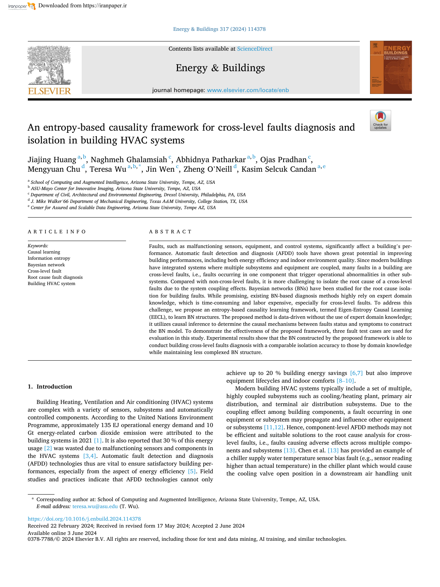
PDF page 2 / صفحه 2
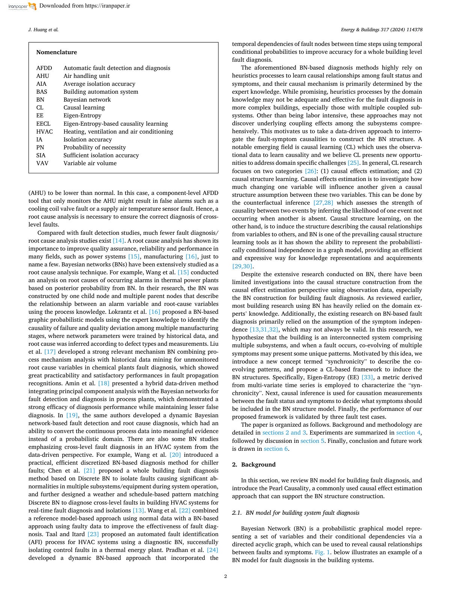
PDF page 4 / صفحه 4
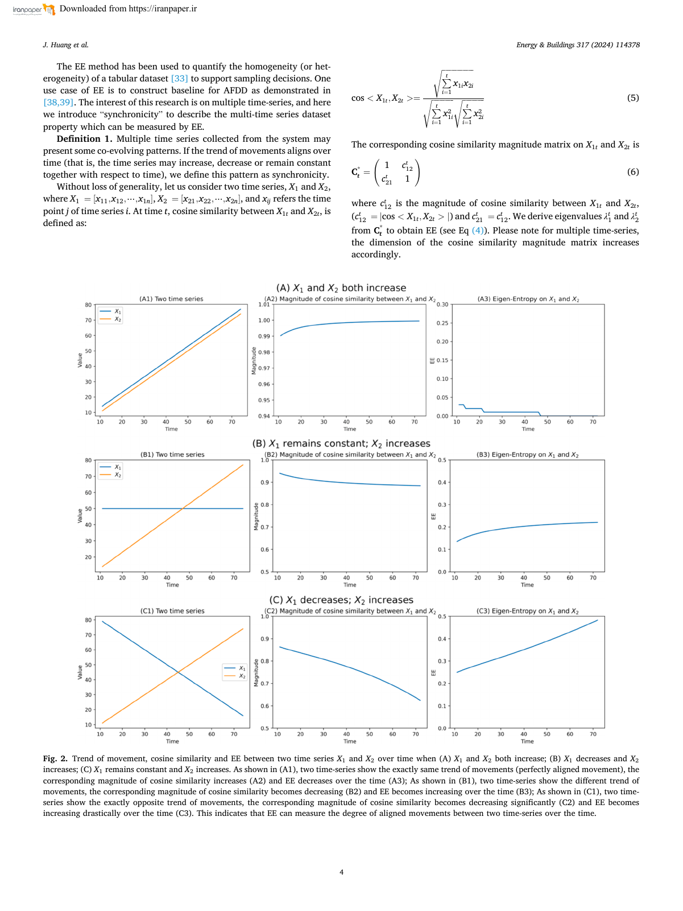
PDF page 5 / صفحه 5
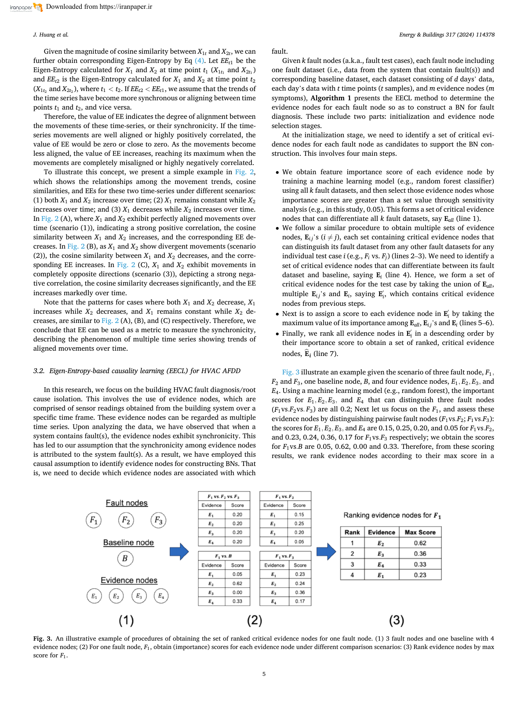
PDF page 6 / صفحه 6
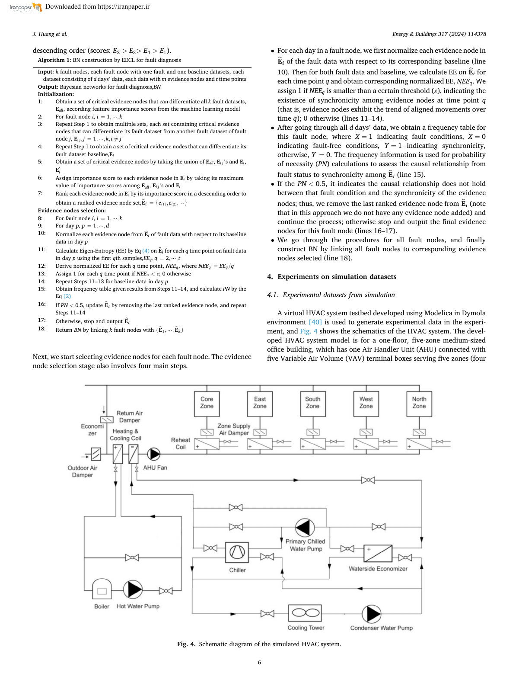
PDF page 9 / صفحه 9
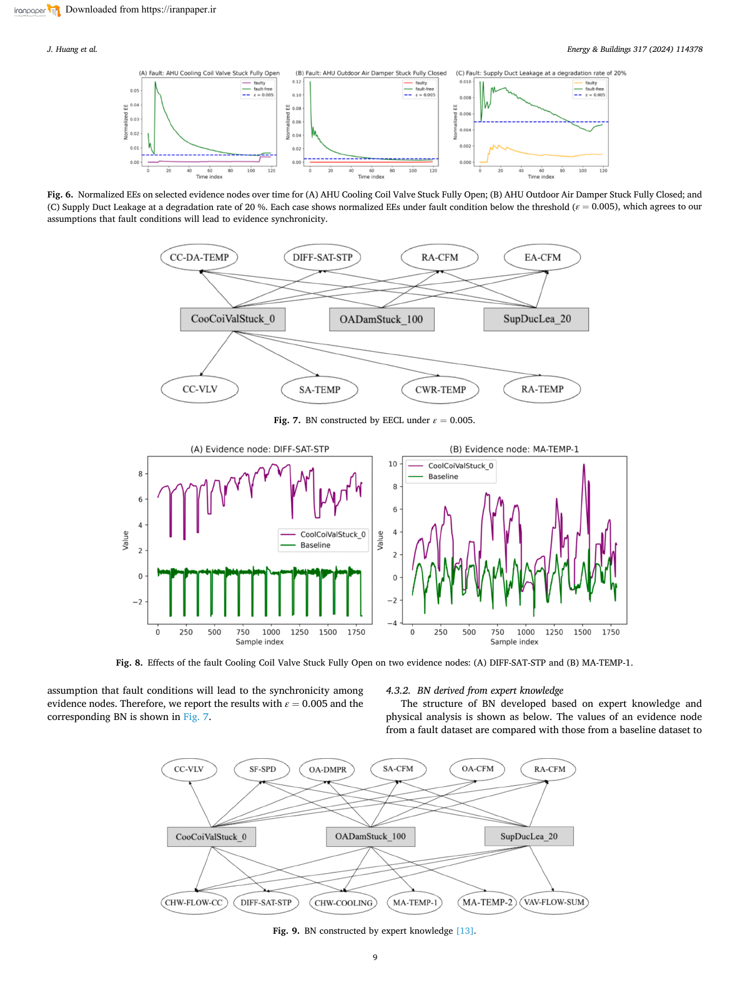
PDF page 10 / صفحه 10
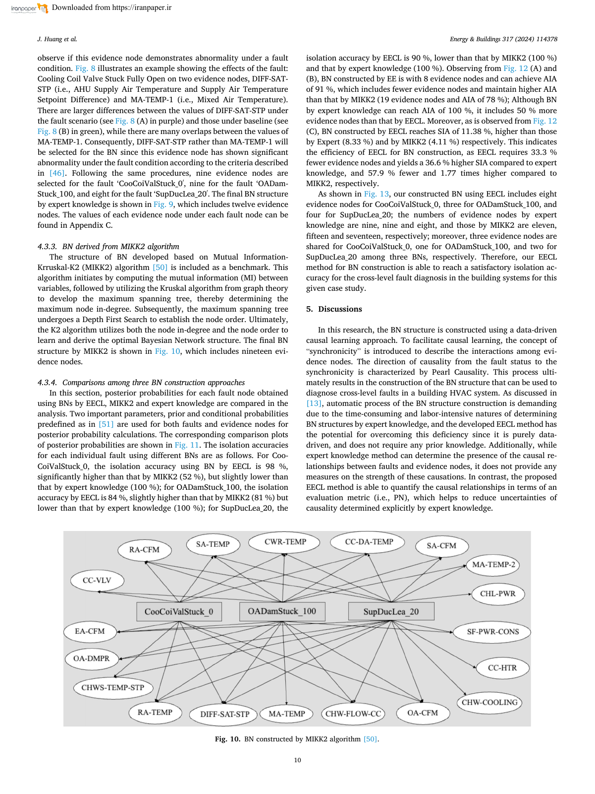
PDF page 11 / صفحه 11
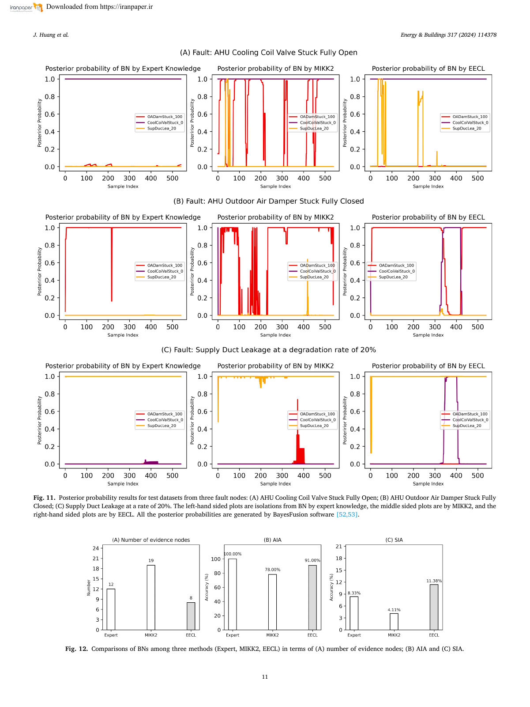
PDF page 12 / صفحه 12
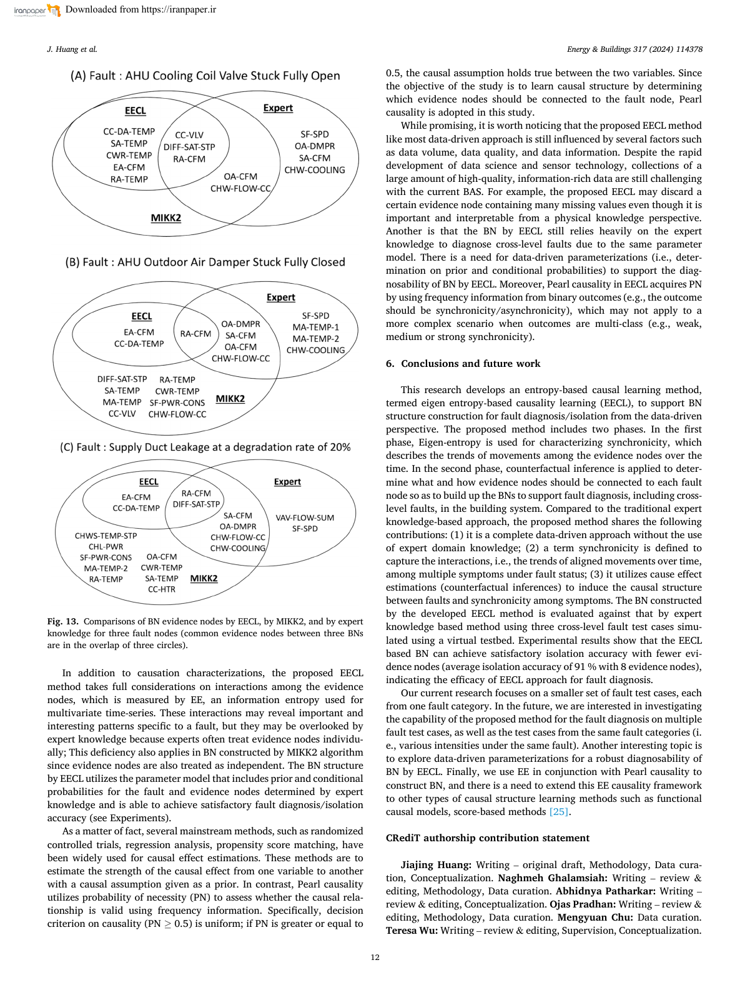
PDF page 15 / صفحه 15
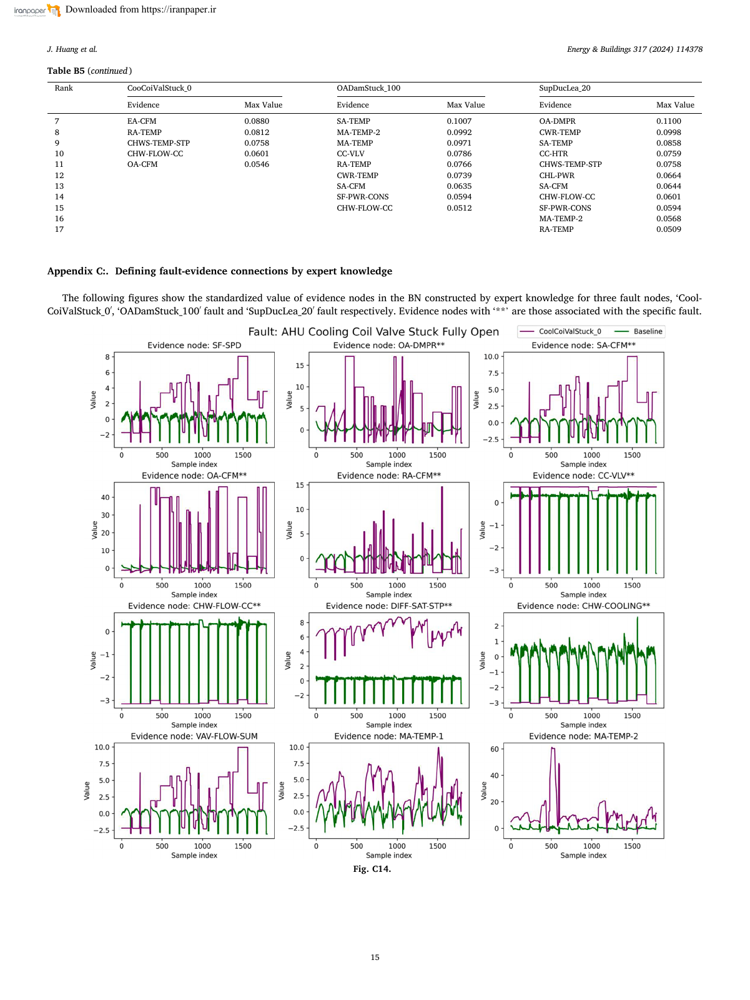
PDF page 16 / صفحه 16
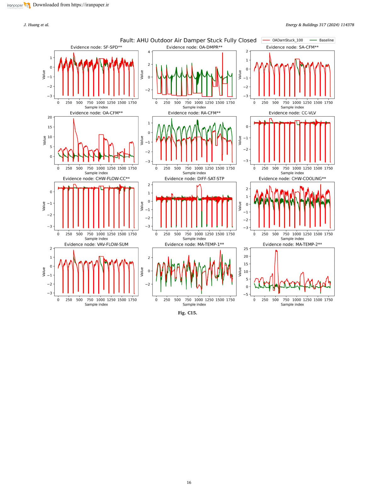
PDF page 17 / صفحه 17
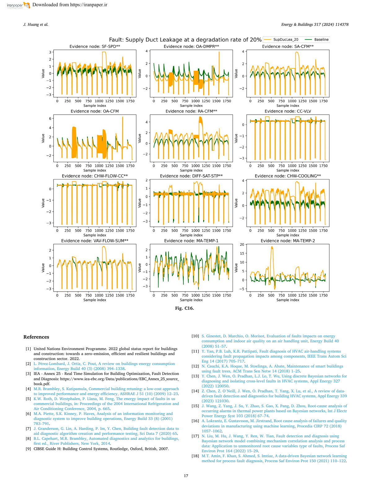
PDF page 18 / صفحه 18
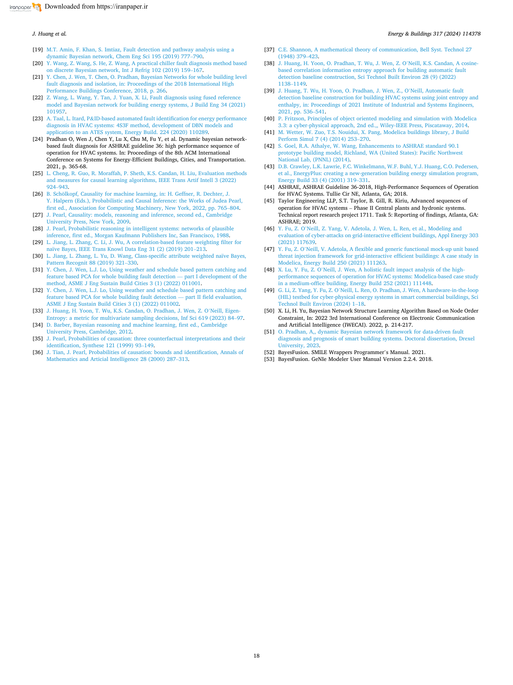
Role in our researchنقش مقاله در پژوهش ما
Why is it important to our research?چرا برای پژوهش ما مهم است؟
It directly addresses cross-level fault propagation and the selection of evidence for a probabilistic diagnostic graph. This is relevant to distinguishing causes that produce overlapping symptoms under limited observation.مستقیماً انتشار خطای بینسطحی و انتخاب شاهد برای گراف تشخیص احتمالاتی را بررسی میکند. این موضوع برای تفکیک علتهایی با نشانههای همپوشان تحت مشاهده محدود اهمیت دارد. Source · PDF p. 1Source · PDF p. 2Source · PDF p. 5
What does it contribute to our research?چه سهمی در پژوهش ما دارد؟
It contributes a concrete EECL structure-learning procedure, synchronicity features, ranked evidence selection, and a comparison of diagnostic accuracy versus the number of evidence variables. It also reveals the need to specify probability parameterization separately from structure learning.رویه مشخص یادگیری ساختار EECL، ویژگی همزمانی، انتخاب رتبهبندیشده شاهد و مقایسه دقت با تعداد متغیرهای شاهد را فراهم میکند. همچنین ضرورت تعریف مستقل پارامتر احتمال از یادگیری ساختار را نشان میدهد. Source · PDF p. 5Source · PDF p. 6Source · PDF p. 10Source · PDF p. 11Source · PDF p. 12
How can we employ it?چگونه از آن استفاده کنیم؟
Use P0 to map its assumptions and sensor variables to available Alameda telemetry; test EECL as one P5 graph-construction option, rather than assuming that it is already our Dynamic SCM. Training must use explicitly designated scenarios. Define validation-only threshold selection, missing-data behavior, prior/CPT estimation, multi-cause semantics and abstention before comparison.در P0 مفروضات و حسگرهای آن را به تلهمتری موجود Alameda نگاشت کنیم؛ EECL را یکی از گزینههای ساخت گراف در P5 بیازماییم و آن را خودکار معادل SCM پویا ندانیم. آموزش بر سناریوهای مشخص انجام شود. انتخاب آستانه با اعتبارسنجی، داده گمشده، برآورد پیشین/CPT، چندعلتی و امتناع پیش از مقایسه تعریف شوند. Source · PDF p. 6Source · PDF p. 7Source · PDF p. 8Source · PDF p. 12
Should we implement it as a baseline?آیا باید آن را بهعنوان خطمبنا پیاده کنیم؟
Recommended as an adapted diagnostic baseline candidate, alongside expert/rule-based and simpler Bayesian diagnosis. It tests whether the proposed SCM adds value beyond this data-driven structure learner. Exact reproduction requires the original commercial-HVAC data and parameter model; a reduced Alameda variant must disclose changes. No evidence here makes it a complete intervention-planning baseline.بهعنوان نامزد خطمبنای تشخیصی اقتباسی در کنار روش خبره/قاعدهای و شبکه بیزی سادهتر توصیه میشود. مقایسه ارزش SCM پیشنهادی فراتر از این یادگیرنده ساختار را میسنجد. بازتولید دقیق به داده HVAC تجاری و مدل پارامتر اصلی نیاز دارد و نسخه Alameda باید تغییرات را اعلام کند. این منبع خطمبنای کامل برنامهریزی مداخله نیست. Source · PDF p. 7Source · PDF p. 10Source · PDF p. 12Source · PDF p. 13
Full bibliography & sourceکتابنامه کامل و منبع
Huang et al. (2024) · DOI: 10.1016/j.enbuild.2024.114378 Source · PDF p. 1
References below are transcribed from this article, not independently reviewed publications. Original pp.17–18 provide the authoritative typography and context.منابع زیر از همین مقاله استخراج شدهاند و به معنی مرور مستقل آن آثار نیستند. صفحات ۱۷ و ۱۸ نگارش و بافت اصلی را ارائه میکنند.